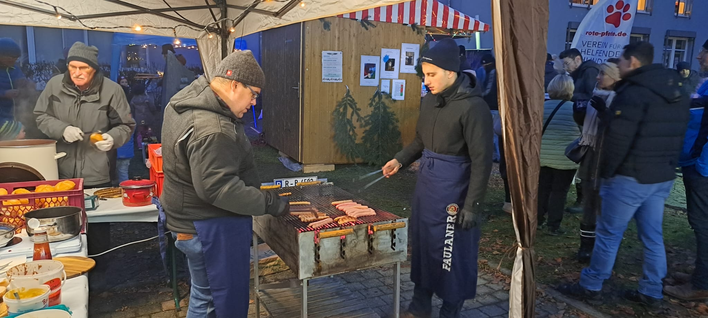

Am 29. und 30. November hat der Schützenverein Waldeslust Probstberg am diesjährigen Christkindlmarkt in Wenzenbach teilgenommen. Trotz der kühlen Temperaturen war die Stimmung an unserem Stand hervorragend.
Kulinarischer Genuss
Für das leibliche Wohl unserer Gäste war bestens gesorgt. Wir verkauften heißen Glühwein zum Aufwärmen und unsere beliebten Knackersemmeln, die reißenden Absatz fanden. Es war eine Freude, so viele bekannte Gesichter zu sehen und gemeinsam den Jahresausklang zu feiern.
Dank an die Helfer
Ein besonderer Dank gilt all unseren fleißigen Helfern. Ohne eure tatkräftige Unterstützung beim Aufbau, Verkauf und Abbau wäre eine Teilnahme an einer solchen Veranstaltung nicht möglich. Euer Einsatz ist das Herzstück unseres Vereinslebens.
Ausblick
Wir blicken auf zwei gelungene Tage zurück und freuen uns schon jetzt darauf, in zwei Jahren wieder am Christkindlmarkt teilzunehmen. Wir wünschen allen Mitgliedern und Freunden des Vereins eine besinnliche Weihnachtszeit, einen guten Rutsch und alles Gute für das kommende Jahr.